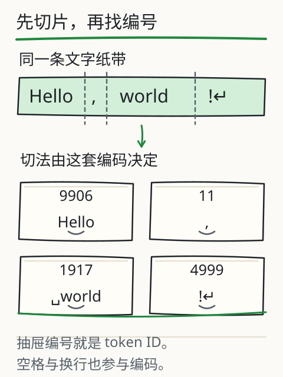
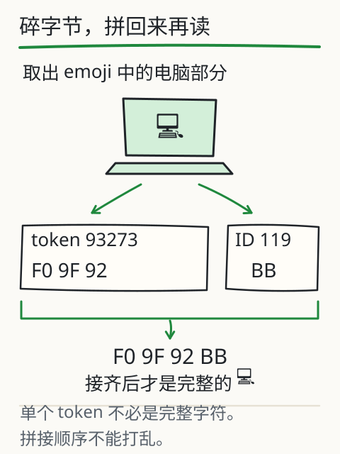

文字怎样变成模型的输入？
“今天天气真不错！”这句话，数一数字不难。可如果有人说“一个汉字算一个 token”，你会信吗？先记下自己的猜测，待会儿只换一种编码，原文一个字都不改，看看计数会不会变。

把文字想成一条纸带：进入模型前，它先被切成片段，再换成编号。切口可以落在你意想不到的地方，甚至把一个字拆开。
先找找空格去了哪里
负责切纸带的程序叫分词器。它把文本编码成一串 token ID，也就是片段在这套词表中的编号。一个编号可能对应常见词、半个单词、标点或空格，也可能只对应一个字符的一部分字节。
先选“英文与空格”，找找 world 前面的空格：它是自己一片，还是跟后面的文字待在一起？再换成“生僻字与 emoji”，你会看到有些片段连一个完整的字都显示不出来。下面四组结果是实际编码后保存的快照，可以逐片检查。

拆开一段文字
选同一句话，换一种编码。点片段查看 ID 与原始字节。
␠ 表示空格，↵ 表示换行；连接符会标明名称，独立组合标记加 ◌ 帮助显示。这些提示符不改原始字节。不能独立组成字符的 token 显示为“字节片段”。
锁定文本的本地编码快照，不运行语言模型；两种编码不代表所有模型。
为什么有的片段显示不成字？
看到“字节片段”时，先别急着判断文字坏了。电脑用 UTF-8 字节存放这些文字，一个汉字或 emoji 往往占好几个字节。分词器的切口如果落在中间，单拿半截去显示，自然拼不出完整的字。此时出现的替代字符并不是原文里的字符。
点开这样的 token，看看它的十六进制字节。再把所有 token 的字节按原顺序接回去，完整的字就回来了，连空格和换行也能无损还原。拼接字节和逐片显示，是两件不同的事。

沿着图走完“原文→编码片段→ID”，再留意最后一步：编号只是查表用的地址。42 和 43 离得近，不能说明对应的意思近。模型接下来会按编号取出训练得到的数字向量，才开始后续计算。
原文不动，换一套切法
现在回到开头的猜测：保持句子不变，在 cl100k_base 和 o200k_base 之间切换。两套词表和切分规则不同，编号、片段数都可能变。原文没变，尺子换了；所以不能用汉字数直接代替 token 数，也不能拿另一套词表的 ID 随意喂给同一个模型。
这里可以比较四组固定输入，并展开每片的编号和字节；没有自由输入框，因为预存快照不能替任意新句子当场编码。
字数、字节数和 token 数，各管什么？
- 页面里的“Unicode 码点数”按码点计数，不等于视觉上看到的字形数量。一个带肤色和职业的 emoji 可以由多个码点组成。
- “UTF-8 字节数”表示这段文字编码后的长度。
- “token 数”由所选分词器决定。上下文窗口和很多文本接口的计量以它为单位。
这三个计数回答的是三个问题，彼此没有通用的固定换算比例。而且真实接口还可能加入对话格式、工具定义等内容。上面的计数只覆盖你选中的原始字符串，不包括这些额外结构。
一份长文，怎样放得下？
下次要把一份长文交给模型，先查它的输入限制，再给回答留出空间。放不下时，围绕问题挑相关段落或分步处理。省下几个 token 却删掉了关键日期或条件，得到的答案反而可能不能用。
从字节到编号，中间到底发生了什么？
如果把刚才的纸带再拆细一层，里面是什么？在 UTF-8 中，A 存成一个字节 41，中 存成三个字节 E4 B8 AD。这些是十六进制字节，不是 token ID。随后分词器才按规则把字节组织成片段，再把每片换成词表编号；它可以合起多个字节，也可以从一个字中间切开。
片段的大小又是谁定的？BPE 一类方法会统计训练材料，学习哪些相邻片段值得合并。实际编码还受到预切分、词表和特殊标记规则影响。它要解决的是“这套规则会把输入切成哪些片段”，不保证每片都是词典里的完整词。两套编码学到的片段不同，同一句话自然可能得到长短不同的编号序列。
走到编号这一步，模型就能查参数表了。词表第 42 项和第 43 项只是相邻的存储位置，意义未必接近。同样的数字换到另一套词表，甚至可能指向完全不同的片段，因此模型不能直接接收另一套词表的 ID。
再回到那个常见问题：“我只粘了一小段，为什么占了这么多输入？”因为应用可能还加了系统要求、聊天格式、历史、工具定义和图片表示。上下文与费用要查实际接口的计量规则，刚才的原始字符串快照没有算这些部分。
合上图，试着回答：把字符数除以一个固定常数，为什么只能粗估 token？你现在可以沿着过程解释：语言、空格和罕见字符会影响切片；编码规则不同，片段不同；应用还可能加上额外结构。真要精确计量，就用匹配的编码器或实际接口。
再深一层
想核对纸带有没有被拼错，可以执行 npm run check:fixtures:llm：它会用锁定版本的本地编码器重新编码，比较 ID，再把片段字节拼回原文。每种编码还附有 rank 数据的哈希。到这一步，我们看到的是文字如何编码；语言模型怎样利用这些输入，要接着往下看。